Hazırlık
Gün çoğu zaman sessiz bir odada başlar: gelinlik, ayna, son dokunuşlar. Çiftin henüz kimseye görünmeyen ilk anları.

Bir günün tamamı birkaç saatte geçer. Kareleri ise ömür boyu kalır.
Poz vermeyi değil, yaşamayı izleyen bir bakış. Bir düğün gününün sessiz ve gürültülü kısımlarının ikisi de kareye girsin.
Kaydırdıkça gün ilerler. Bu akış bir örnektir; gerçek çekim sizin programınıza göre kurulur.
Gün çoğu zaman sessiz bir odada başlar: gelinlik, ayna, son dokunuşlar. Çiftin henüz kimseye görünmeyen ilk anları.
Yüzükler, imzalar, ilk bakışlar. Kalabalığın ortasında yakalanan birkaç saniyelik sessizlik.
Gürültüden uzak, yalnızca ikiniz. Işığı ve mekânı birlikte seçerek, aceleye getirmeden.
Işıklar, dans, fenerler. Günün en rahat ve en gerçek karelerinin çıktığı saatler.


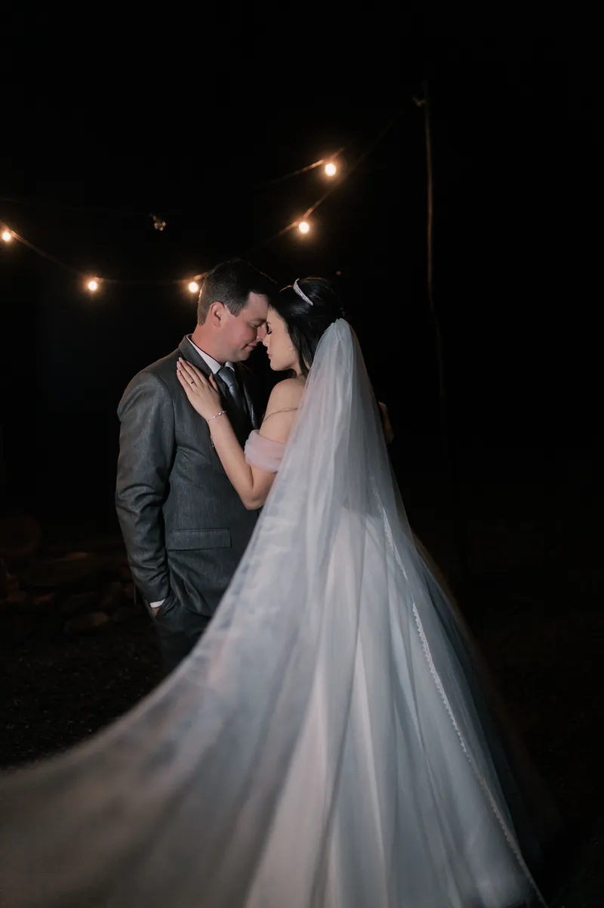
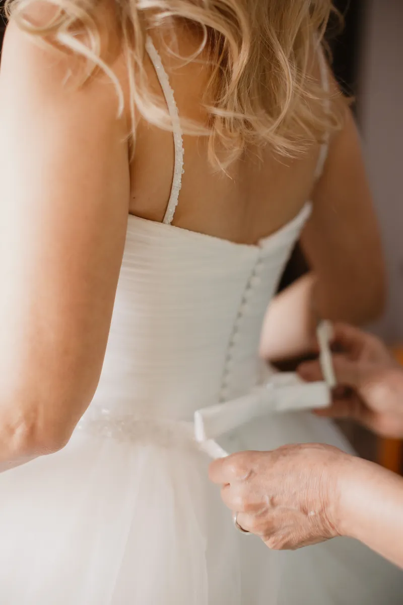
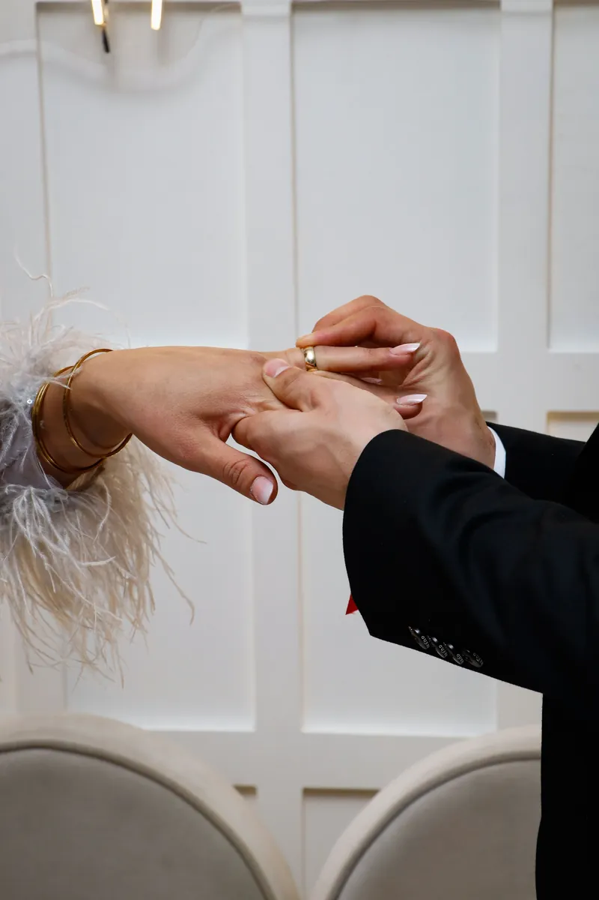

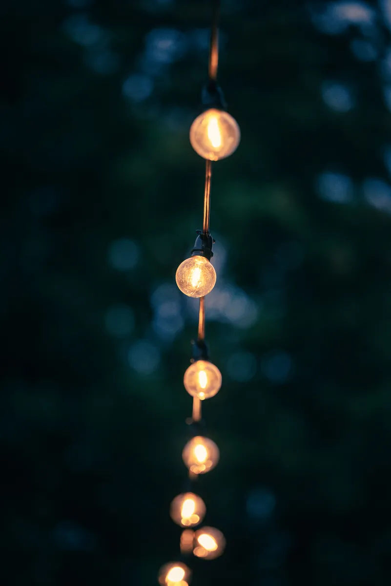
Bölümlerdeki fotoğraflar temsilî stok fotoğraflardır; işletmenin kendi çalışmaları değildir.
Yana kaydırın ya da oklara basın. Her açılımda iki sayfa, bir düğün albümü gibi.

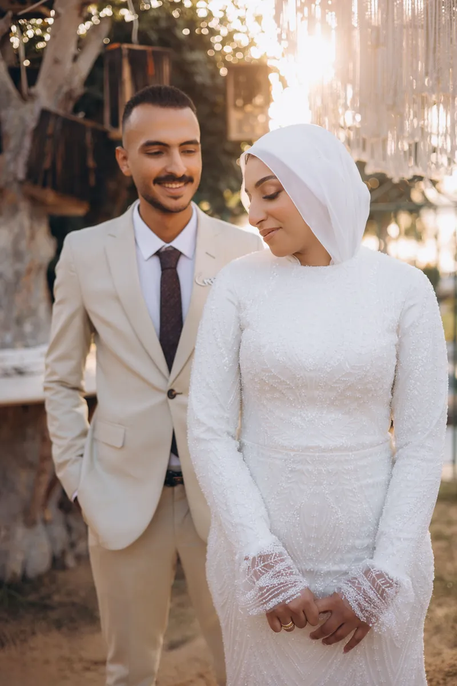
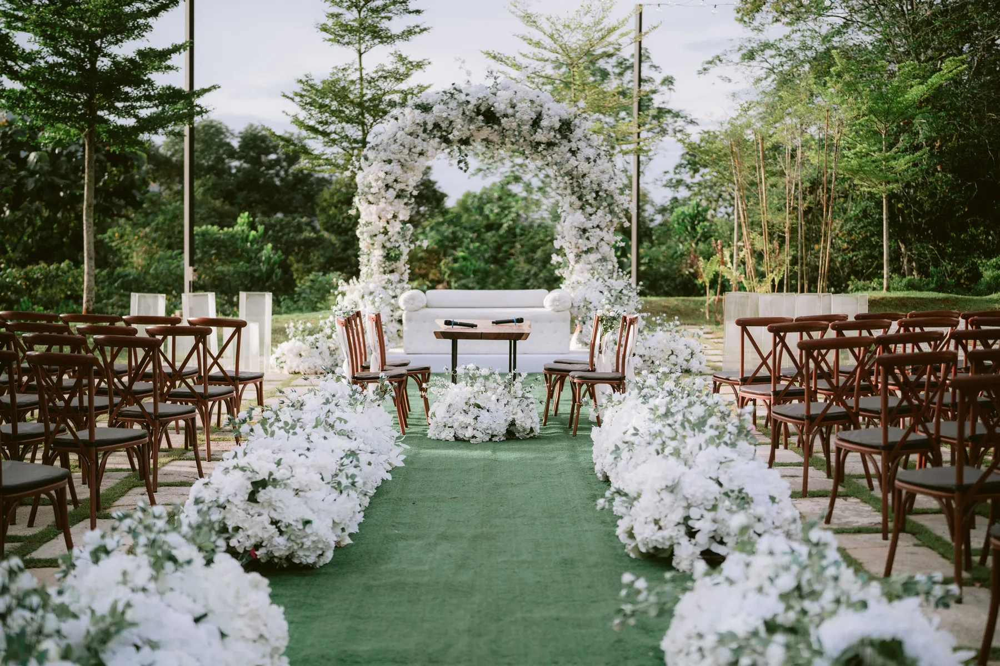
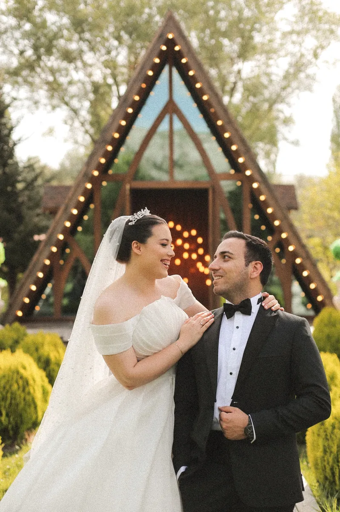


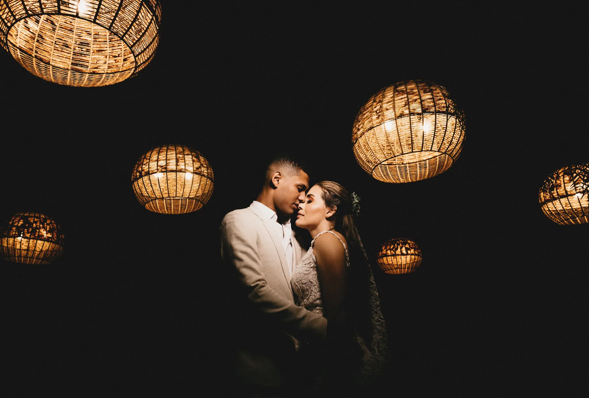


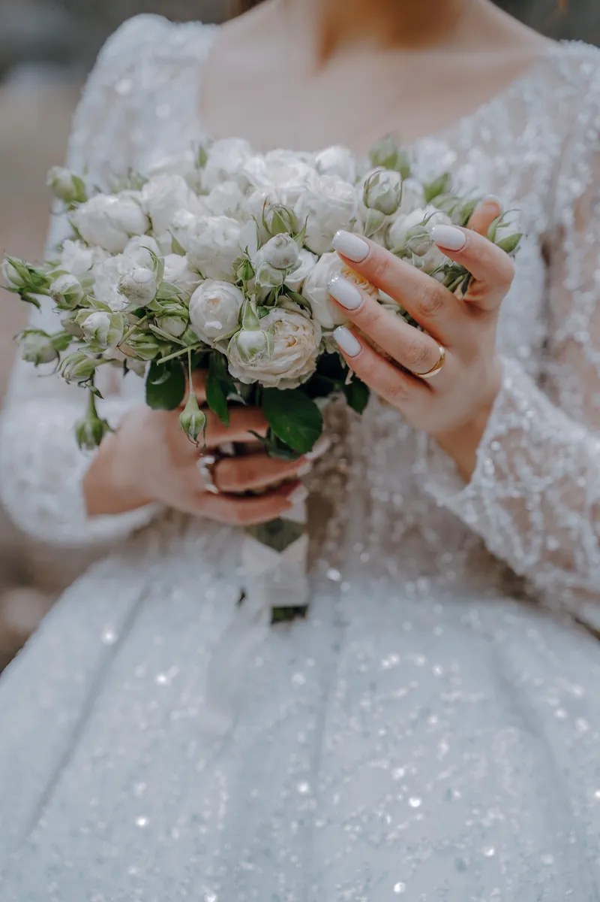
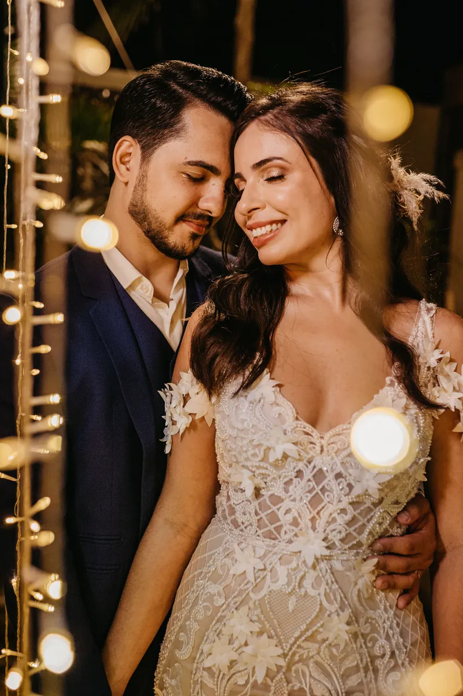
Albümdeki kareler temsilî stok fotoğraflardır (Pexels); işletmenin kendi çalışmaları değildir ve kişiler işletmenin müşterisi değildir. Gerçek çalışmalar için işletmenin Instagram sayfasına bakın.
Aklınızdaki tarihleri takvimden seçin; en fazla üç tane. Mesaj sizin yerinize hazırlanır, WhatsApp'ta açılır.
Takvim işletmenin dolu ya da boş günlerini göstermez; çünkü bunu bilmiyoruz. Seçtiğiniz tarihler bir talep olarak iletilir, yanıtı işletme verir.
Bu bir talep mesajıdır, rezervasyon değildir. Tarihin uygunluğunu işletme onaylar.
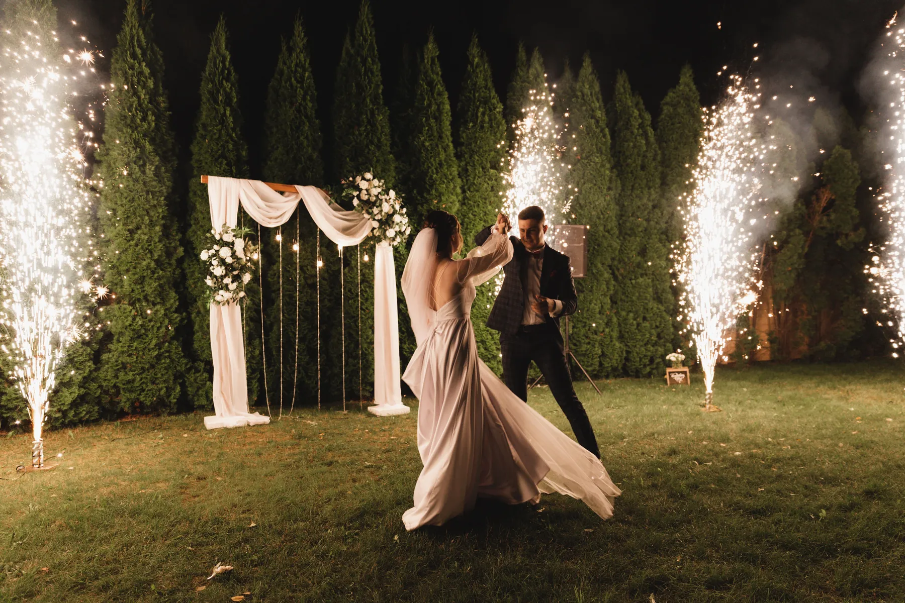
Temsilî stok fotoğraf